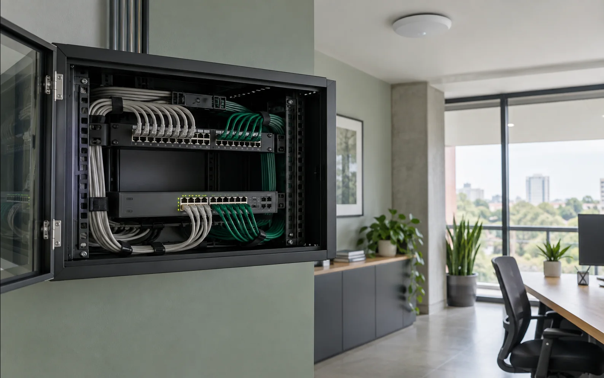
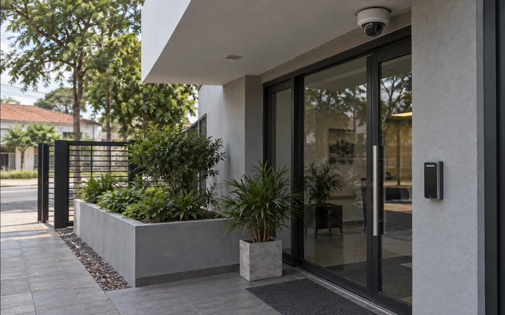
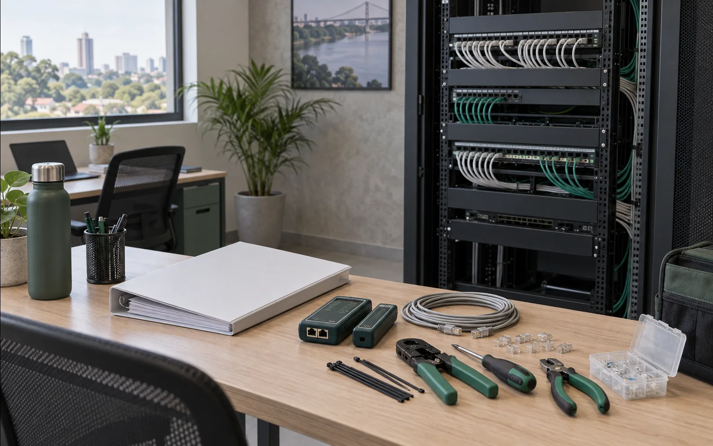

Planificar, conectar, proteger y mantener tu infraestructura tecnológica
Elegí el punto de partida que más se parece a tu caso. Revisamos el lugar, el uso real y, cuando la obra todavía está en curso, qué conviene definir antes de ejecutar.
La red se corta o no llega donde hace falta
Revisamos cobertura, cableado y capacidad para que la red responda al uso real del lugar, sin zonas muertas ni equipos compitiendo por una conexión inestable.

Qué revisamos
- Cobertura y zonas muertas
- Saturación y estabilidad
- Puntos de acceso y cableado
- Red de invitados
Criterio técnico: dimensionamos equipos y ubicación según superficie, interferencias y cantidad de usuarios; no por una lista cerrada de productos.
Consultar este servicioEl cableado empieza en el plano, no durante la instalación.
Elaboramos planos de cableado de datos para obras nuevas, reformas y ampliaciones. Definimos puntos de red, recorridos, canalizaciones y ubicación de racks para que la instalación pueda ejecutarse con orden y quede documentada.
Qué revisamos
- Puntos y tomas de red, incluidos puntos previstos para WiFi
- Recorridos, canalizaciones y cableado horizontal
- Racks, gabinetes y enlaces entre sectores cuando corresponda
- Identificación, nomenclatura y referencias para la ejecución
Criterio técnico: el plano define qué debe llegar a cada punto y por dónde, para evitar improvisaciones, facilitar presupuestos y dejar una base útil para mantenimiento o ampliaciones. El alcance es cableado de datos; no sustituye proyectos eléctricos, arquitectónicos, civiles ni firmas o aprobaciones profesionales.
Solicitar plano de cableadoHay puntos ciegos o accesos sin control
Evaluamos qué debe verse, detectarse y registrarse para integrar cámaras, alarmas, accesos o incendio con alertas útiles y una operación cotidiana más clara.

Qué revisamos
- Cámaras, grabación y acceso remoto
- Alarmas, sensores y sirenas
- Control de acceso y registros
- Detección y señalización de incendio
Criterio técnico: definimos cobertura, autonomía y registros según riesgos concretos, recorridos y responsables de respuesta.
Consultar este servicioCada incidencia vuelve a empezar de cero
Ordenamos equipos, usuarios, permisos y respaldos para resolver fallas con contexto, reducir tiempos de respuesta y dejar una base técnica comprensible.

Qué revisamos
- Equipos, usuarios y permisos
- Inventario e historial técnico
- Accesos y respaldos básicos
- Documentación operativa
Criterio técnico: priorizamos trazabilidad, continuidad y una entrega que no dependa de la memoria de una sola persona.
También podemos sumar: una solución web, formulario, monitoreo o automatización puntual cuando resuelva una necesidad concreta del soporte.
Consultar este servicioNo necesitás elegir equipos antes de consultar.
Contanos qué falla o qué necesitás instalar. Empezamos por revisar el caso y definir qué conviene.
Hablar por WhatsApp